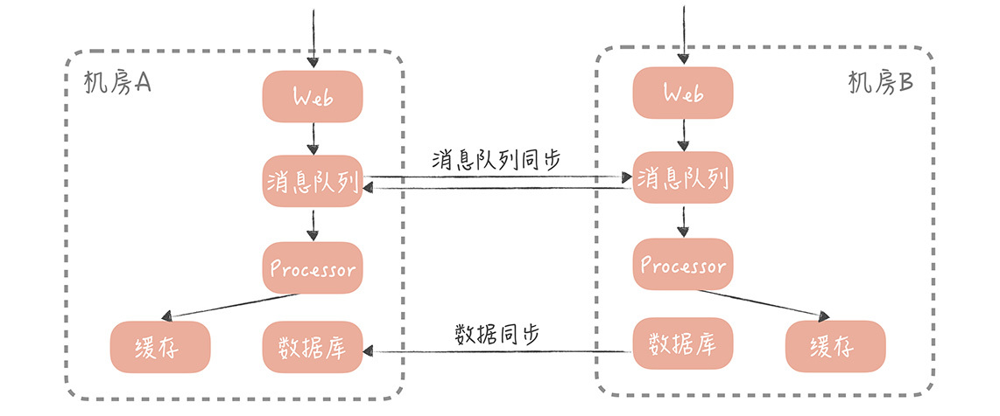

- 00 开篇词 为什么你要学习高并发系统设计？.md.html
- 01 高并发系统：它的通用设计方法是什么？.md.html
- 02 架构分层：我们为什么一定要这么做？.md.html
- 03 系统设计目标（一）：如何提升系统性能？.md.html
- 04 系统设计目标（二）：系统怎样做到高可用？.md.html
- 05 系统设计目标（三）：如何让系统易于扩展？.md.html
- 06 面试现场第一期：当问到组件实现原理时，面试官是在刁难你吗？.md.html
- 07 池化技术：如何减少频繁创建数据库连接的性能损耗？.md.html
- 08 数据库优化方案（一）：查询请求增加时，如何做主从分离？.md.html
- 09 数据库优化方案（二）：写入数据量增加时，如何实现分库分表？.md.html
- 10 发号器：如何保证分库分表后ID的全局唯一性？.md.html
- 11 NoSQL：在高并发场景下，数据库和NoSQL如何做到互补？.md.html
- 12 缓存：数据库成为瓶颈后，动态数据的查询要如何加速？.md.html
- 13 缓存的使用姿势（一）：如何选择缓存的读写策略？.md.html
- 14 缓存的使用姿势（二）：缓存如何做到高可用？.md.html
- 15 缓存的使用姿势（三）：缓存穿透了怎么办？.md.html
- 16 CDN：静态资源如何加速？.md.html
- 17 消息队列：秒杀时如何处理每秒上万次的下单请求？.md.html
- 18 消息投递：如何保证消息仅仅被消费一次？.md.html
- 19 消息队列：如何降低消息队列系统中消息的延迟？.md.html
- 20 面试现场第二期：当问到项目经历时，面试官究竟想要了解什么？.md.html
- 21 系统架构：每秒1万次请求的系统要做服务化拆分吗？.md.html
- 22 微服务架构：微服务化后，系统架构要如何改造？.md.html
- 23 RPC框架：10万QPS下如何实现毫秒级的服务调用？.md.html
- 24 注册中心：分布式系统如何寻址？.md.html
- 25 分布式Trace：横跨几十个分布式组件的慢请求要如何排查？.md.html
- 26 负载均衡：怎样提升系统的横向扩展能力？.md.html
- 27 API网关：系统的门面要如何做呢？.md.html
- 28 多机房部署：跨地域的分布式系统如何做？.md.html
- 29 Service Mesh：如何屏蔽服务化系统的服务治理细节？.md.html
- 30 给系统加上眼睛：服务端监控要怎么做？.md.html
- 31 应用性能管理：用户的使用体验应该如何监控？.md.html
- 32 压力测试：怎样设计全链路压力测试平台？.md.html
- 33 配置管理：成千上万的配置项要如何管理？.md.html
- 34 降级熔断：如何屏蔽非核心系统故障的影响？.md.html
- 35 流量控制：高并发系统中我们如何操纵流量？.md.html
- 36 面试现场第三期：你要如何准备一场技术面试呢？.md.html
- 37 计数系统设计（一）：面对海量数据的计数器要如何做？.md.html
- 38 计数系统设计（二）：50万QPS下如何设计未读数系统？.md.html
- 39 信息流设计（一）：通用信息流系统的推模式要如何做？.md.html
- 40 信息流设计（二）：通用信息流系统的拉模式要如何做？.md.html
- 加餐 数据的迁移应该如何做？.md.html
- 期中测试 10道高并发系统设计题目自测.md.html
- 用户故事 从“心”出发，我还有无数个可能.md.html
- 结束语 学不可以已.md.html
- 捐赠
28 多机房部署：跨地域的分布式系统如何做？
你好，我是唐扬。
来想象这样一个场景：你的垂直电商系统部署的 IDC 机房，在某一天发布了公告说，机房会在第二天凌晨做一次网络设备的割接，在割接过程中会不定时出现瞬间，或短时间网络中断。
机房网络的中断，肯定会对业务造成不利的影响，即使割接的时间在凌晨（业务的低峰期），作为技术负责人的你，也要尽量思考方案来规避隔离的影响。然而不幸的是，在现有的技术架构下，电商业务全都部署在一个 IDC 机房中，你并没有好的解决办法。
而 IDC 机房的可用性问题是整个系统的阿喀琉斯之踵，一旦 IDC 机房像一些大厂一样，出现很严重的问题，就会对整体服务的可用性造成严重的影响。比如：
2016 年 7 月，北京联通整顿旗下 40 多个 IDC 机房中，不规范的接入情况，大批不合规接入均被断网，这一举动致使脉脉当时使用的蓝汛机房受到影响，脉脉宕机长达 15 个小时，著名的 A 站甚至宕机超过 48 个小时，损失可想而知。
而目前，单一机房部署的架构特点，决定了你的系统可用性受制于机房的可用性，也就是机房掌控了系统的生命线。所以，你开始思考，如何通过架构的改造，来进一步提升系统的可用性。在网上搜索解决方案和学习一些大厂的经验后，你发现“多机房部署”可以解决这个问题。
多机房部署的难点是什么
多机房部署的含义是：在不同的 IDC 机房中，部署多套服务，这些服务共享同一份业务数据，并且都可以承接来自用户的流量。
这样，当其中某一个机房出现网络故障、火灾，甚至整个城市发生地震、洪水等大的不可抗的灾难时，你可以随时将用户的流量切换到其它地域的机房中，从而保证系统可以不间断地持续运行。这种架构听起来非常美好，但是在实现上却是非常复杂和困难的，那么它复杂在哪儿呢？
假如我们有两个机房 A 和 B 都部署了应用服务，数据库的主库和从库部署在 A 机房，那么机房 B 的应用如何访问到数据呢？有两种思路。
一个思路是直接跨机房读取 A 机房的从库：
另一个思路是在机房 B 部署一个从库，跨机房同步主库的数据，然后机房 B 的应用就可以读取这个从库的数据了：
无论是哪一种思路，都涉及到跨机房的数据传输，这就对机房之间延迟情况有比较高的要求了。而机房之间的延迟，和机房之间的距离息息相关，你可以记住几个数字：
\1. 北京同地双机房之间的专线延迟一般在 1ms~3ms。
这个延迟会造成怎样的影响呢？要知道，我们的接口响应时间需要控制在 200ms 之内，而一个接口可能会调用几次第三方 HTTP 服务，或者 RPC 服务。如果这些服务部署在异地机房，那么接口响应时间就会增加几毫秒，是可以接受的。
一次接口可能会涉及几次的数据库写入，那么如果数据库主库在异地机房，那么接口的响应时间也会因为写入异地机房的主库，增加几毫秒到十几毫秒，也是可以接受的。
但是，接口读取缓存和数据库的数量，可能会达到十几次甚至几十次，那么这就会增加几十毫秒甚至上百毫秒的延迟，就不能接受了。
\2. 国内异地双机房之间的专线延迟会在 50ms 之内。
具体的延迟数据依据距离的不同而不同。比如，北京到天津的专线延迟，会在 10ms 之内；而北京到上海的延迟就会提高到接近 30ms；如果想要在北京和广州部署双机房，那么延迟就会到达 50ms 了。在这个延迟数据下，要想保证接口的响应时间在 200ms 之内，就要尽量减少跨机房的服务调用，更要避免跨机房的数据库和缓存操作了。
\3. 如果你的业务是国际化的服务，需要部署跨国的双机房，那么机房之间的延迟就更高了，依据各大云厂商的数据来看，比如，从国内想要访问部署在美国西海岸的服务，这个延迟会在 100ms~200ms 左右。在这个延迟下，就要避免数据跨机房同步调用，而只做异步的数据同步。
如果你正在考虑多机房部署的架构，那么这些数字都是至关重要的基础数据，你需要牢牢记住，避免出现跨机房访问数据造成性能衰减问题。
机房之间的数据延迟，在客观上是存在的，你没有办法改变，你可以做的，就是尽量避免数据延迟对于接口响应时间的影响。那么在数据延迟下，你要如何设计多机房部署的方案呢？
逐步迭代多机房部署方案
1. 同城双活
制定多机房部署的方案不是一蹴而就的，而是不断迭代发展的。我在上面提到，同城机房之间的延时在 1ms~3ms 左右，对于跨机房调用的容忍度比较高，所以，这种同城双活的方案复杂度会比较低。
但是，它只能做到机房级别的容灾，无法做到城市级别的容灾。不过，相比于城市发生地震、洪水等自然灾害来说，机房网络故障、掉电出现的概率要大的多。所以，如果你的系统不需要考虑城市级别的容灾，一般做到同城双活就足够了。那么，同城双活的方案要如何设计呢？
假设这样的场景：你在北京有 A 和 B 两个机房，A 是联通的机房，B 是电信的机房，机房之间以专线连接，方案设计时，核心思想是，尽量避免跨机房的调用。具体方案如下：
首先，数据库的主库可以部署在一个机房中，比如部署在 A 机房中，那么 A 和 B 机房数据都会被写入到 A 机房中。然后，在 A、B 两个机房中各部署一个从库，通过主从复制的方式，从主库中同步数据，这样双机房的查询请求可以查询本机房的从库。一旦 A 机房发生故障，可以通过主从切换的方式，将 B 机房的从库提升为主库，达到容灾的目的。
缓存也可以部署在两个机房中，查询请求也读取本机房的缓存，如果缓存中数据不存在，就穿透到本机房的从库中，加载数据。数据的更新可以更新双机房中的数据，保证数据的一致性。
不同机房的 RPC 服务会向注册中心，注册不同的服务组，而不同机房的 RPC 客户端，也就是 Web 服务，只订阅同机房的 RPC 服务组，这样就可以实现 RPC 调用尽量发生在本机房内，避免跨机房的 RPC 调用。

你的系统肯定会依赖公司内的其他服务，比如审核，搜索等服务，如果这些服务也是双机房部署的，那么也需要尽量保证只调用本机房的服务，降低调用的延迟。
使用了同城双活架构之后，可以实现机房级别的容灾，服务的部署也能够突破单一机房的限制，但是，还是会存在跨机房写数据的问题，不过鉴于写数据的请求量不高，所以在性能上是可以容忍的。
2. 异地多活
上面这个方案，足够应对你目前的需要，但是，你的业务是不断发展的，如果有朝一日，你的电商系统的流量达到了京东或者淘宝的级别，那么你就要考虑，即使机房所在的城市发生重大的自然灾害，也要保证系统的可用性。而这时，你需要采用异地多活的方案（据我所知，阿里和饿了么采用的都是异地多活的方案）。
在考虑异地多活方案时，你首先要考虑异地机房的部署位置。它部署的不能太近，否则发生自然灾害时，很可能会波及。所以，如果你的主机房在北京，那么异地机房就尽量不要建设在天津，而是可以选择上海、广州这样距离较远的位置。但这就会造成更高的数据传输延迟，同城双活中，使用的跨机房写数据库的方案，就不合适了。
所以，在数据写入时，你要保证只写本机房的数据存储服务，再采取数据同步的方案，将数据同步到异地机房中。一般来说，数据同步的方案有两种：
一种基于存储系统的主从复制，比如 MySQL 和 Redis。也就是在一个机房部署主库，在异地机房部署从库，两者同步主从复制, 实现数据的同步。
另一种是基于消息队列的方式。一个机房产生写入请求后，会写一条消息到消息队列，另一个机房的应用消费这条消息后，再执行业务处理逻辑，写入到存储服务中。
我建议你，采用两种同步相结合的方式，比如，你可以基于消息的方式，同步缓存的数据、HBase 数据等。然后基于存储，主从复制同步 MySQL、Redis 等数据。
无论是采取哪种方案，数据从一个机房，传输到另一个机房都会有延迟，所以，你需要尽量保证用户在读取自己的数据时，读取数据主库所在的机房。为了达到这一点，你需要对用户做分片，让一个用户每次的读写都尽量在同一个机房中。同时，在数据读取和服务调用时，也要尽量调用本机房的服务。这里有一个场景：假如在电商系统中，用户 A 要查看所有订单的信息，而这些订单中，店铺的信息和卖家的信息很可能是存储在异地机房中，那么你应该优先保证服务调用，和数据读取在本机房中进行，即使读取的是跨机房从库的数据，会有一些延迟，也是可以接受的。

课程小结
本节课，为了提升系统的可用性和稳定性，我带你探讨了多机房部署的难点，以及同城双机房和异地多活的部署架构，在这里，我想强调几个重点：
不同机房的数据传输延迟，是造成多机房部署困难的主要原因，你需要知道，同城多机房的延迟一般在 1ms~3ms，异地机房的延迟在 50ms 以下，而跨国机房的延迟在 200ms 以下。
同城多机房方案可以允许有跨机房数据写入的发生，但是数据的读取，和服务的调用应该尽量保证在同一个机房中。
异地多活方案则应该避免跨机房同步的数据写入和读取，而是采取异步的方式，将数据从一个机房同步到另一个机房。
多机房部署是一个业务发展到一定规模，对于机房容灾有需求时，才会考虑的方案，能不做则尽量不要做。一旦你的团队决定做多机房部署，那么同城双活已经能够满足你的需求了，这个方案相比异地多活要简单很多。而在业界，很少有公司，能够搭建一套真正的异步多活架构，这是因为这套架构在实现时过于复杂，所以，轻易不要尝试。
总之，架构需要依据系统的量级和对可用性、性能、扩展性的要求，不断演进和调整，盲目地追求架构的“先进性”只能造成方案的复杂，增加运维成本，从而给你的系统维护带来不便。
© 2019 - 2023 Liangliang Lee. Powered by gin and hexo-theme-book.